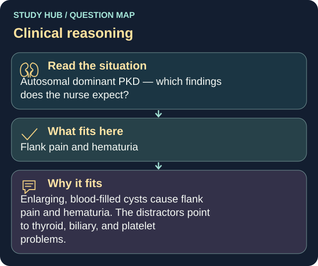

Autosomal dominant PKD — which findings does the nurse expect?
Answer
Flank pain and hematuria
Reasoning
Enlarging, blood-filled cysts cause flank pain and hematuria.
Clinical detail
The distractors point to thyroid, biliary, and platelet problems.
Why the other answers do not fit
- Bradycardia and dry skin
- Jaundice and clay-colored stools
- Petechiae and bleeding gums
Shared reasoning for choices without a separate note: Enlarging, blood-filled cysts cause flank pain and hematuria. The distractors point to thyroid, biliary, and platelet problems.
